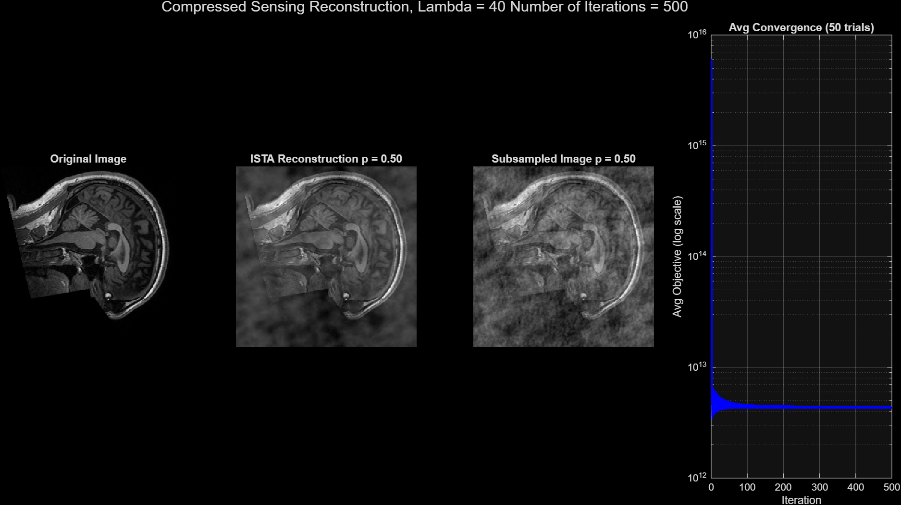
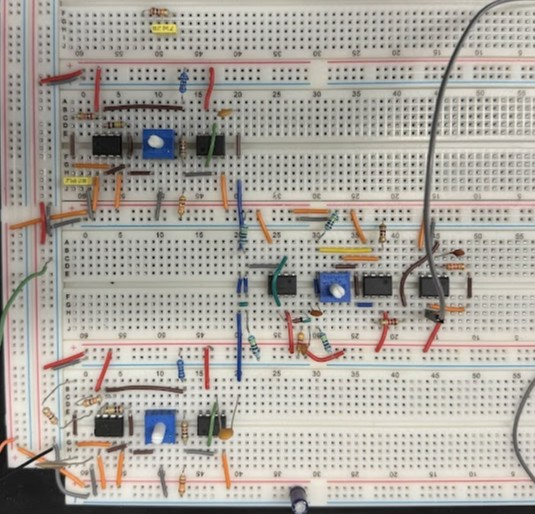
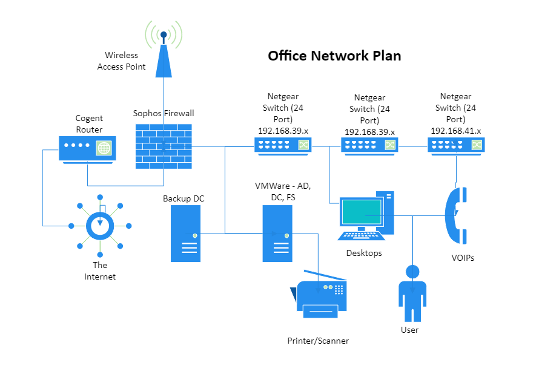

Projects
A collection of engineering systems, signal processing research, and software applications. Click any card to view details.
CooperLink
May 2026Full-stack platform connecting Cooper Union students with alumni mentors, career advice, and professional networks.

MRI Compressed Sensing Reconstruction
May 2026MRI reconstruction pipeline in MATLAB leveraging compressed sensing and wavelet-domain sparsity with iterative soft-thresholding (ISTA).
Spectral Domain Optical Coherence Tomography (SD-OCT)
April 2026Vectorized SD-OCT pipeline reconstructing 1D A-Scans and 2D B-Scans from raw interference data with sub-nanometer phase microscopy.
Real-Time ASCII Video Renderer (Video2ASCII)
December 2025Real-time computer vision engine translating live webcam streams and local video files into colorized or grayscale ASCII output.
Concurrent FIFO Library
November 2025A thread-safe concurrent queue library in C implementing custom spin lock-based semaphores for multi-threaded synchronization.
Homemade Linux Shell
October 2025A custom Unix-like command parser supporting shell scripting, pipeline filtering, I/O redirection, and job execution control.
MOSFET Amplifier
May 2025Simulated and physical prototyping of an electrical MOSFET transistor amplifier conforming to strict gain and bandwidth specs.
AI Chatbot (AskTCB)
April 2025An enterprise AI chatbot utilizing RAG pipelines, Bing Search APIs, and Azure OpenAI model endpoints for business intelligence.
Multi-Threaded Port Scanner
February 2025High-speed network security port scanner executing concurrent parallel checks via Python multithreading queues.

Physics with Python
December 2024Physics simulations modeling and plotting Thomas Young's light interference and wave diffraction experiments.


Theremin
December 2024Designed and calibrated circuit oscillators on breadboards to fabricate a pitch and volume-controlled Theremin.
Game Portfolio
May 2024A suite of course projects including SOS (C terminal engine), Uno (Python logic), and Wheel of Fortune (Python solver).

Network Diagram
July 2023Enterprise network visual topology modeling documenting client network nodes, routers, firewalls, and configurations.